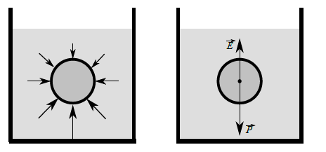
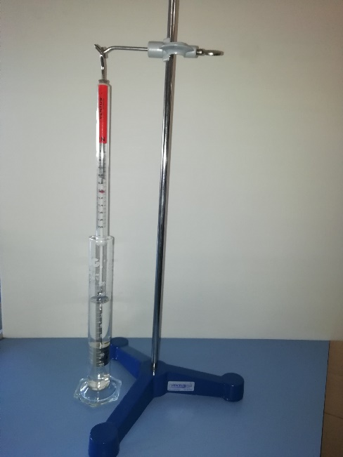

El alumno determinará la densidad de un material desconocido mediante la aplicación del principio de Arquímedes, a partir de la medida de peso aparente de cilindros de dicho material sumergidos en agua y del cálculo de sus volúmenes.
Cuando un sólido se encuentra sumergido en un fluido aparecen fuerzas debidas a la presión que este ejerce sobre aquel. Consideremos como ejemplo una esfera sumergida en un líquido. De acuerdo con la ecuación fundamental de la estática de fluidos, la presión crece con la profundidad, y por tanto las fuerzas ejercidas sobre los puntos del sólido más alejados de la superficie son mayores que las ejercidas sobre los puntos más cercanos. Estas fuerzas son siempre perpendiculares a la superficie (ver figura), y su resultante , dirigida verticalmente hacia arriba, recibe el nombre de empuje. La diferencia entre el peso del cuerpo y el empuje es el peso aparente. Si el peso aparente es positivo ( > ), el sólido se hundirá; en caso contrario, flotará de tal modo que el empuje sobre la parte sumergida sea igual al peso: ( = ).

Izq: Las fuerzas ejercidas por el fluido sobre un sólido siempre son normales a la superficie del sólido y aumentan en módulo conforme aumenta la profundidad. Drcha: La resultante de estas fuerzas de presión es el empuje , que se opone al peso del cuerpo y tiende a llevarlo hacia la superficie.
La aparición del empuje debido a las fuerzas de presión no está limitada al caso de los líquidos. Estas fuerzas aparecen también en los gases, si bien en estos los valores del empuje son mucho menores debido a la menor densidad que presentan. El principio de Arquímedes establece que el empuje sufrido por un sólido sumergido en un fluido es igual al peso del volumen de fluido que desaloja. Puesto que el volumen de fluido desplazado por el sólido cuando está totalmente sumergido es V, el empuje viene dado por , siendo la densidad del fluido (agua en nuestro caso, ). El peso aparente del sólido sumergido es entonces:
Esta expresión muestra que el peso aparente es directamente proporcional al volumen del cilindro.

Montaje Experimental
El montaje experimental consiste en una probeta con agua, un dinamómetro de 2 N y un conjunto de 5 pesas de 20 gramos con su correspondiente portapesas.
Inicialmente la probeta se llenará con agua hasta la marca de los 70 ml. A continuación, se procede a medir el peso aparente (F) de los diferentes “cilindros” que crearemos al añadir sucesivamente pesas al portapesas. Para ello sumergiremos completamente en el agua estos “cilindros”, incluido el portapesas, asegurándonos de que no toquen las paredes ni el fondo del recipiente para evitar errores. Comenzaremos sumergiendo únicamente el portapesas para a continuación, ir añadiendo de una en una las 5 pesas disponibles anotando las medidas necesarias.
En cada paso, y con la ayuda de las marcas que existen en la probeta, se medirá el volumen total en la probeta antes (V0) y después (Vf) de sumergir las pesas, así como el peso aparente (F) del conjunto (pesas + portapesas). El aumento de volumen que se produce en la probeta se corresponderá con el volumen del conjunto de pesas que hemos sumergido (V). Con estos datos, se representará en una gráfica el peso aparente frente al volumen, para posteriormente realizar un ajuste lineal y, a partir de la pendiente, calcular la densidad del material aplicando el Principio de Arquímedes y la segunda Ley de Newton.
Resultados
Cilindro | V0 () | Vf () | ±εV0_f ( ) | V ( ) | ±εV ( ) | Peso aparente, F ( ) | ±εF ( ) |
C1 | |||||||
C2 | |||||||
C3 | |||||||
C4 | |||||||
C5 | |||||||
C6 |
Cálculo de
Cálculo de